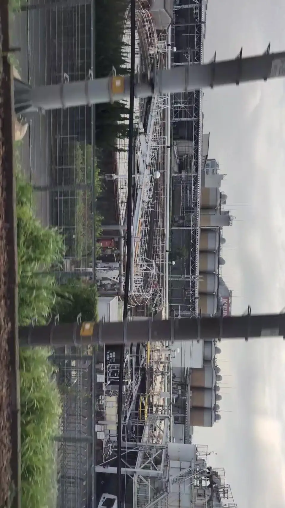

- 見える区間
- 名古屋 → 岐阜羽島
- 座席側
- E席・山側
- タイミング
- 東京発のぞみ基準で約98分後
- 写真
- 4 枚
この巨大な銀のタンク、何をしている？
キリンビール名古屋工場は、愛知県清須市寺野に立地する主力工場のひとつで、ビール類の製造能力・出荷量ともに中京圏最大級です。工場敷地全体はおよそ29ヘクタール（東京ドーム約6個分）と広大で、その中にキリンビールの発酵・貯酒・パッケージング工程を担う建屋群と、キリンビバレッジ東海工場の飲料製造工程が並んでいます。新幹線からいちばん目立つのは、ずらりと並ぶ円筒形の巨大タンク群です。
もっと見る: キリンビール 名古屋工場@letus10: キリンビール工場車窓記事
東京から新大阪方面へ向かう場合は、名古屋 → 岐阜羽島が近づいたらE席・山側の窓を少し早めに見てください。新大阪から東京方面へ向かう場合は、通過順が逆になります。
タンクの正体と、工場の裏側
銀色の円筒タンクは、ビールを発酵・熟成させ、そのまま貯蔵する「発酵貯酒タンク」です。仕込み釜で麦芽と水から作った麦汁（ばくじゅう）に酵母を加え、糖分がアルコールと炭酸ガスに変わっていく発酵工程がここで行われます。発酵後は0℃前後の低温で数週間、酵母の働きが落ち着くまで熟成させ、味わいを整えます。1基あたり数百キロリットルの容量を持つものも多く、これが数十本並ぶスケール感が、新幹線から見る「巨大な生ビール」のイメージにそのままつながっています。
工場では、原材料の受け入れから、仕込み・発酵・貯酒・ろ過・充填（缶・瓶・樽）・出荷までを一つの敷地でおこなっています。名古屋工場は「一番搾り」など主力ブランドのほか、時期によっては限定ビールも仕込む重要拠点です。
見学ツアー（ブルワリーツアー）も設けられていて、事前予約でビールのできる工程を歩きながら学び、最後に淹れたてのビールを試飲することができます。新幹線で見えたあの銀色のタンクの中を、後日、目で見て体で感じる楽しみ方もあります。
位置の目安
地図をひらくスポット位置と、新幹線から見る位置を切り替えられます。
キリンビール工場を見逃さないコツ
1. 先に見る方向を決める
名古屋 → 岐阜羽島が近づいたら、E席・山側の窓を先に意識してください。現在地から追う場合はライブガイド、事前に確認する場合はこのページの地図が役立ちます。
はっきり見えるのは数秒ほど。案内が出てからカメラを探すより、先に座席側と窓の方向を決めておくと拾いやすくなります。
2. 見どころ
名古屋を出て庄内川を渡り、枇杷島駅の横を通ったら、E席側の窓に沿った工業地帯を見てください。ずらりと並ぶ銀色の円筒タンクとキリンのロゴが入った建物が現れます。清洲城のすぐ手前なので、キリン→清洲城→ソーラーアークと連続して短い区間で三つの見どころを楽しめます。
写真で見るキリンビール工場



 関連
清洲城
関連
清洲城
 関連
名古屋駅前
関連
名古屋駅前
 関連
ソーラーアーク
関連
ソーラーアーク